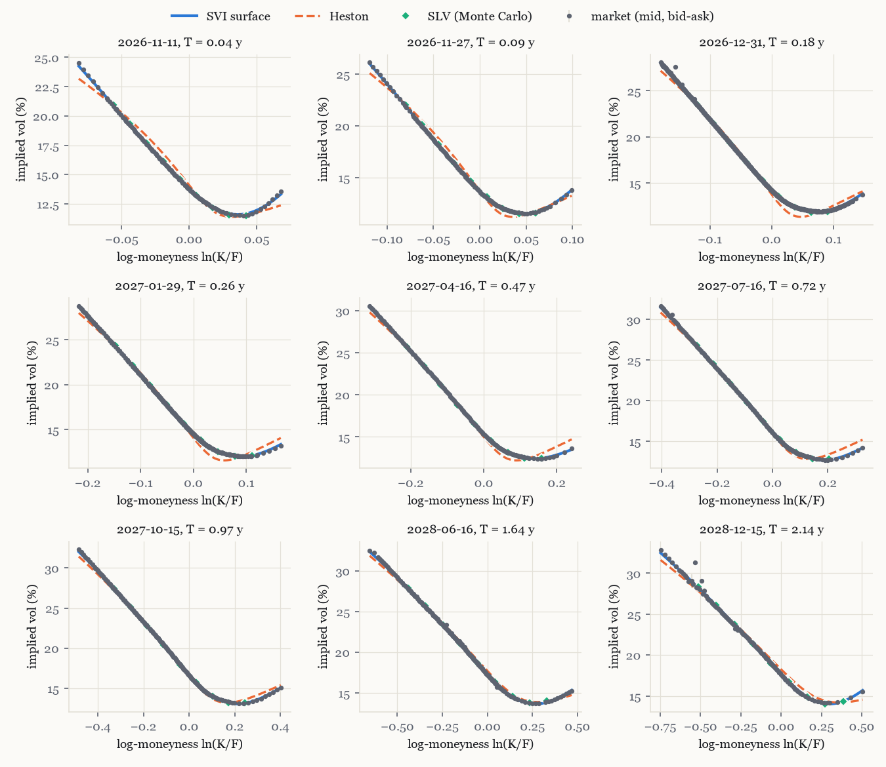
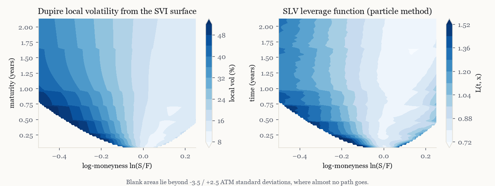

Option pricing lab
European, American, Asian and barrier options under Black-Scholes, Heston, Dupire local volatility and a Heston stochastic-local-volatility model whose leverage function is calibrated by the particle method, all fitted to the SPX smile.
Code and tests on GitHub Calibration report
Price an option
Same smile, different exotics
Four models calibrated to the same SPX option snapshot (27 October 2026, spot rescaled to 100) agree on vanillas and disagree on path-dependent payoffs. These prices come from the Python library, by Monte Carlo.


How it is built
- Surface: extended SSVI as an arbitrage-free start, then raw SVI slices by the quasi-explicit method, with Lee's bound and calendar ordering as linear constraints and butterflies penalised.
- Heston: Lewis formula with the "little trap" characteristic function, least squares on vega-scaled errors.
- SLV: L(t, S)² E[v | S] = σloc²(t, S), the conditional expectation estimated by kernel regression on 200,000 particles (Guyon and Henry-Labordère).
- Checks: 74 tests against closed forms, Fourier prices and trees; the JavaScript on this page is tested against the same Python library.